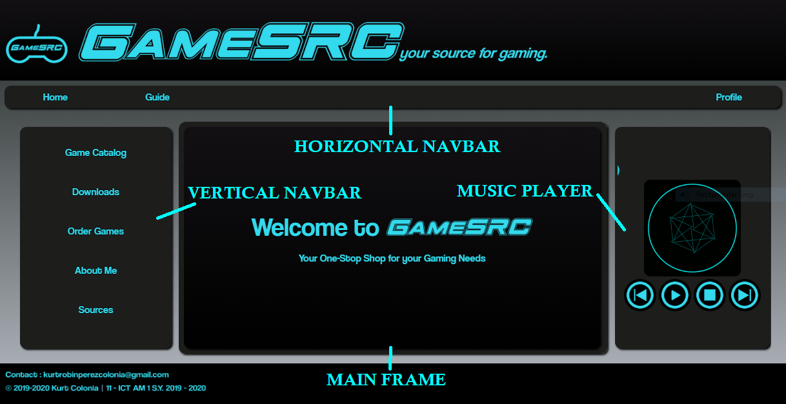

|
Welcome to GameSRC. Your One-Stop shop for your Gaming Needs. By Gamers, For Gamers.

Website Screenshot w/ Guide
This page will serve as a Guide on navigating through this webpage for newcomers. There are two main navigation bars in the website, the Horizontal Navigation Bar, and the Vertical Navigation Bar. Let's start off with the Horizontal Navigation Bar.
The Horizontal Navigation Bar, as labeled on the photo above, features 3 options: the "Home" button, the "Guide" button (here), and the "Profile" button. The Home button, which is self-explanatory, leads you to the Home Page which appears on the middle frame of the site. The Guide button leads you to this page! The page contains the guide on navigating this website. The About Me page shows you information regarding the creation and the purpose of this website. The Profile button features a dropdown which has the following options: My Profile, My Blog, and Log Out. My Profile shows you your profile and basic account information. My Blog contains your posted Blogs. The Log Out button logs you out of your account!
The Vertical Navigation Bar, as labeled on the photo above, features 5 options: the "Game Catalog", the "Downloads" section, the "Order Games" section, the "Support" page, and the "Sources" page. The Game Catalog is the main feature of the site. It features all the available games that can be ordered through our website! It has four categories: Action Games, Platform Games, Sandbox Games, and Simulation Games. The Downloads section features the GameSRC Android App (unreleased, under development), and the Wallpapers page, which contains wallpapers from the different video games featured in this site! The Order Games page is where you can order the games that are available in our website! The Support page contains the website's contact information, such as E-mail and Facebook. Lastly, the Sources page shows all the different sources of information shown in the site.
Our website also has a Music Player. It features 3 Non Copyrighted Songs from Alan Walker.
We hope you have fun navigating through our site! Happy gaming!
- Kurt Robin Colonia, Web Programmer, GameSRC Owner
|